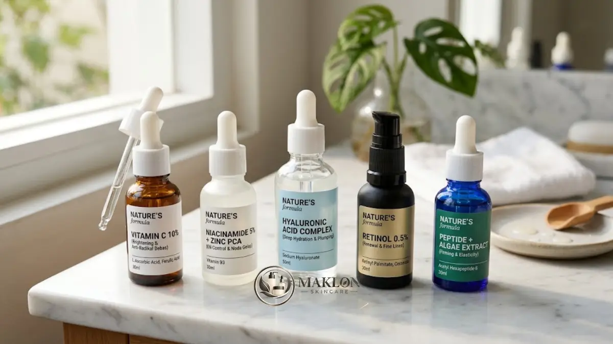
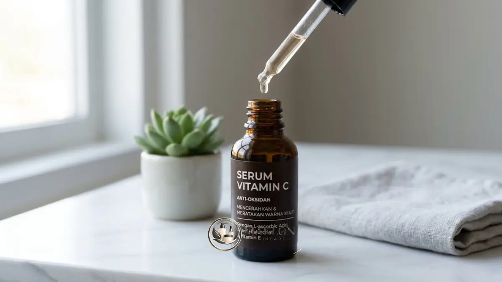

Formula serum best seller umumnya memadukan bahan aktif populer seperti vitamin C, niacinamide, asam hialuronat, atau retinol dengan tekstur ringan yang nyaman dipakai setiap hari.
- Penelitian Pinnell dkk. (2001) menunjukkan L-ascorbic acid terserap baik hingga konsentrasi 20 persen dengan pH di bawah 3,5.
- Serum best seller biasanya unggul pada kombinasi bahan aktif yang jelas fungsinya dan tekstur yang ringan.
- Vitamin C untuk kulit tampak kusam, niacinamide untuk minyak dan warna kulit, asam hialuronat untuk hidrasi, retinol untuk tekstur.
- Kecocokan dengan jenis kulit lebih penting daripada popularitas produk.
- Uji tempel mengurangi risiko iritasi sebelum memakai serum di seluruh wajah.
Apa yang Membuat Formula Serum Menjadi Best Seller?
Formula serum menjadi best seller ketika bahan aktifnya jelas, teksturnya nyaman, harganya terjangkau, dan sebagian besar penggunanya merasakan manfaat tanpa iritasi yang berarti.
Ada beberapa ciri konsisten yang berulang pada setiap formula serum yang berhasil merajai volume penjualan di industri kosmetik saat ini.
Pertama, fokus pada satu masalah utama. Serum yang menyebut tujuan spesifik, seperti mencerahkan atau melembapkan, lebih mudah dipahami pembeli dibandingkan serum yang menjanjikan segalanya sekaligus.
Kedua, tekstur ringan. Serum yang cepat meresap dan tidak lengket membuat pengguna mau memakainya rutin setiap pagi dan malam hari tanpa merasa berat di kulit.
Ketiga, kombinasi bahan yang saling mendukung. Banyak serum populer memadukan satu bahan aktif utama dengan bahan penenang atau pelembap, misalnya panthenol atau gliserin, agar kulit tetap terhidrasi dan nyaman.
Keempat, kemasan yang melindungi formula. Botol kaca gelap dan sistem pompa tertutup membantu menjaga bahan aktif yang mudah rusak oleh paparan cahaya serta udara luar.
Bagi pelaku usaha kecantikan, menguasai elemen-elemen ini merupakan langkah fundamental saat mengembangkan lini maklon serum bersama mitra pabrik terpercaya.
Bagaimana Cara Kerja Vitamin C pada Serum Wajah?
Vitamin C pada serum wajah bekerja sebagai antioksidan yang menetralkan radikal bebas dan membantu kulit tampak lebih cerah serta lebih merata dari waktu ke waktu.
Bentuk asam L-askorbat (L-ascorbic acid) adalah bentuk murni yang paling banyak diteliti efektivitas klinisnya dalam dermatologi modern.

Studi penting dari Pinnell dan kolega (2001) tentang penyerapan perkutan melaporkan bahwa penyerapan terbaik dicapai pada konsentrasi hingga 20 persen.
Penelitian tersebut juga menegaskan bahwa L-ascorbic acid perlu diformulasikan pada tingkat pH di bawah 3,5 agar molekulnya dapat menembus sawar kulit. Pada rentang keasaman itu, risiko rasa perih juga lebih besar pada kulit sensitif.
Bagi pemilik kulit sensitif, turunan vitamin C seperti magnesium ascorbyl phosphate atau ascorbyl glucoside sering menjadi alternatif pilihan karena lebih stabil dan lebih lembut, meskipun efek pencerahannya berlangsung lebih bertahap.
Tanda nyata serum vitamin C yang telah teroksidasi adalah perubahan warna cairan menjadi kuning kecokelatan gelap disertai aroma tengik. Serum yang sudah rusak sebaiknya segera dihentikan pemakaiannya.
Apa Peran Niacinamide pada Serum Terlaris?
Niacinamide pada serum terlaris berperan membantu memperkuat skin barrier, mengatur tampilan minyak, dan menyamarkan noda gelap secara bertahap pada kulit yang rutin memakainya.
Bahan ini merupakan turunan vitamin B3 yang larut dalam air dengan stabilitas kimia yang sangat unggul terhadap paparan suhu maupun cahaya.
Secara umum, formula di pasaran memakai kisaran konsentrasi efektif sekitar 2 hingga 5 persen untuk hasil yang aman dan optimal.
Perlu disadari bahwa kadar yang sangat tinggi tidak otomatis memberi hasil lebih cepat, dan pada sebagian pengguna berkulit reaktif justru dapat memicu kemerahan serta sensasi hangat.
Serum niacinamide umumnya sangat ramah untuk kulit berminyak, kulit kombinasi, dan kulit yang mudah tampak kusam. Bahan ini juga kerap dikombinasikan dengan zinc PCA atau asam hialuronat dalam satu kemasan.
Mengapa Asam Hialuronat Hampir Selalu Ada di Serum Hidrasi?
Asam hialuronat hampir selalu ada di serum hidrasi karena mampu mengikat air di permukaan kulit sehingga kulit terasa lebih lembap, kenyal, dan nyaman sepanjang hari.
Bahan ini bekerja sebagai humektan alami, yang artinya aktif menarik molekul air dari lingkungan luar ke dalam lapisan epidermis terluar.
Serum berbahan dasar asam hialuronat cocok untuk semua jenis kulit, termasuk tipe kulit berminyak yang sering kali salah dikira tidak memerlukan hidrasi cairan.
Untuk hasil yang jauh lebih baik, oleskan serum pada kulit yang masih sedikit lembap (damp skin) setelah mencuci muka atau memakai toner penyegar.
Setelah itu, segera kunci kelembapan dengan lapisan moisturizer agar air tidak menguap kembali ke udara bebas, terutama bila Anda sering beraktivitas di dalam ruangan berpendingin udara (AC).
Kapan Retinol Layak Dipertimbangkan dalam Serum?
Retinol layak dipertimbangkan dalam serum ketika Anda ingin merawat tekstur kulit dan garis halus, dengan syarat kondisi kulit sudah siap dan pemakaian dilakukan secara bertahap.
Retinol merupakan turunan poten dari vitamin A yang merangsang regenerasi sel kulit baru dan pembentukan jaringan serat kolagen alami.
Pada fase awal pemakaian, gejala adaptasi seperti kulit terasa kering, sedikit mengelupas, dan kemerahan ringan dapat terjadi seiring proses penyesuaian sel.
Mulailah pemakaian hanya pada malam hari sebanyak satu sampai dua kali dalam seminggu, lalu tingkatkan frekuensinya secara perlahan sesuai daya toleransi kulit Anda.
Karena retinol meningkatkan sensitivitas kulit terhadap radiasi ultraviolet, penggunaan sunscreen setiap pagi hari menjadi kewajiban mutlak.
Retinol umumnya tidak dianjurkan untuk wanita hamil dan menyusui, sehingga konsultasi langsung dengan dokter menjadi langkah yang bijak bagi kelompok tersebut.
Bagaimana Memilih Serum Berdasarkan Masalah Kulit?
Memilih serum berdasarkan masalah kulit berarti mencocokkan bahan aktif dengan kebutuhan utama, misalnya hidrasi untuk kulit kering atau niacinamide untuk kulit berminyak.
Berikut panduan ringkas yang dapat menjadi acuan praktis sebelum Anda membeli atau memformulasi produk:
- Kulit kering atau dehidrasi: Prioritaskan serum dengan asam hialuronat, ceramide, panthenol, atau gliserin untuk memulihkan elastisitas kulit.
- Kulit berminyak: Gunakan serum niacinamide bertekstur gel cair yang diperkaya zinc untuk mengontrol produksi sebum tanpa menyumbat pori.
- Kulit kusam dan noda gelap: Pilih serum vitamin C stabil atau niacinamide untuk membantu menyamarkan hiperpigmentasi dan meratakan warna kulit.
- Tekstur kasar dan garis halus: Manfaatkan serum retinol atau peptide dengan metode pengenalan bertahap di malam hari.
- Kulit sensitif: Cari formula sederhana dengan daftar komposisi minimal (minimalist formulation) serta bebas dari pewangi buatan dan alkohol sederhana.
Hindari menumpuk beberapa bahan aktif berkonsentrasi kuat sekaligus saat baru pertama kali memulai. Mengenalkan satu produk baru dalam satu waktu memudahkan Anda mengenali penyebab bila sewaktu-waktu terjadi reaksi iritasi.
Bagaimana Cara Menyimpan Serum agar Formula Tetap Stabil?
Serum disimpan dengan baik di tempat sejuk, kering, dan terhindar dari cahaya langsung, dengan tutup rapat setelah dipakai, agar bahan aktif tidak cepat rusak.
Hindari kebiasaan menyimpan serum di dalam kamar mandi yang bersuhu lembap dan beruap panas, atau meninggalkan produk di dalam dasbor kendaraan bermotor.
Suhu tinggi dan paparan radiasi cahaya mempercepat degradasi bahan aktif sensitif, terutama pada formulasi vitamin C murni dan turunan vitamin A seperti retinol.
Perhatikan pula simbol wadah terbuka atau periode setelah pembukaan (PAO) yang tertera pada kemasan produk kosmetik berizin syarat BPOM skincare.
Bila warna, konsistensi tekstur, atau aroma serum mengalami perubahan drastis, produk tersebut sebaiknya tidak digunakan kembali meskipun tanggal kedaluwarsanya belum terlewati.
Apa Tanda Serum Tidak Cocok dengan Kulit?
Tanda serum tidak cocok dengan kulit meliputi rasa perih menetap, kemerahan, gatal, bruntusan baru, atau kulit mengelupas berlebihan setelah pemakaian serum.
Bila tanda-tanda ketidakcocokan tersebut muncul, segera hentikan pemakaian produk dan bilas wajah secara lembut menggunakan air bersih bersuhu suam-suam kuku.
Berikan waktu istirahat yang cukup bagi lapisan sawar kulit untuk pulih sebelum Anda memutuskan mencoba produk kosmetik lain.
Apabila gejala alergi berlangsung berat, disertai pembengkakan atau rasa panas yang tidak kunjung mereda, segera periksakan kondisi kulit Anda ke dokter spesialis kulit terdekat.
Kesimpulan & Poin Kunci Formula Serum
Formula serum best seller berpusat pada perpaduan bahan aktif yang tepat guna seperti vitamin C, niacinamide, asam hialuronat, atau retinol dengan tekstur nyaman yang mendukung kepatuhan pemakaian rutin.
Kecocokan formula dengan kondisi biologis kulit pribadi jauh lebih penting daripada sekadar mengikuti popularitas penjualan atau tren viral di media sosial.
Lakukan selalu uji tempel mandiri, perkenalkan produk secara bertahap, dan perhatikan metode penyimpanan yang benar agar stabilitas bahan aktif tetap terjaga hingga tetes terakhir.